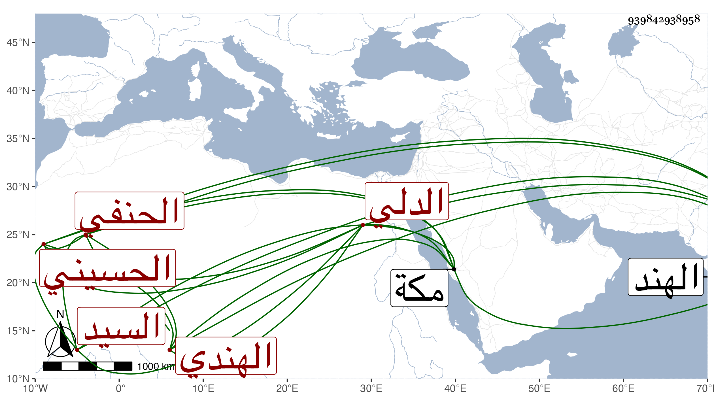

0902Sakhawi.DawLamic.ITO20230111-ara1.EIS1600.939842938958
Biography ID: 939842938958
189
محمد بن مهذب بن ميرصيد بن عبد الله بن نور الله السيد ركن الدين أبو المحاسن بن أبي القسم الحسيني الدلي الهندي الأصل السيابيري المولد الحنفي نزيل مكة . ممن سمع مني بها في مجاورتي بعد الثمانين وقرأ علي يسيرا ثم قرأ علي في سنة ثلاث وتسعين بها أيضا المصابيح وغالب البخاري ، وسافر بعد إلى الهند بنية الرجوع فدام بها حتى سنة تسع وتسعين وربما نسب إلى التشيع . وهو ممن له فضيلة في العربية والصرف ونحوهما بحيث يجتمع عليه الطلبة وقد أخذ عن عبد المحسن ولطف الله والسيد عبد الله وآخرين ثم في الفقه وأصوله عن المحب بن جرباش وعنده سكون ولطف وكتبت له إجازة .
